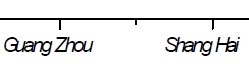

FAQ-804 EPSまたはPDFにエクスポートする際に、問題が起きた場合は、どうしたらよいでしょうか？
export-pdf-prob
最終更新日：2023/1/31
ほとんどのグラフは、正常にPDFおよびEPSへのエクスポートが可能です。ただし、グラフ固有の機能や特定の問題により、うまく機能しない場合があります。例えば、以下のような場合にうまく機能しません。
- 透過率: PDF/EPSエクスポートの場合、 Photoshop、llustrator、Coreldrawなどの他のエディタで開いたときに透過率の設定に問題がある場合があります。
解決法:
- グラフの透過率の設定をオフにします。あるいは
- グラフをPDFとしてエクスポートしてPhotoshopで開くか、EMFとしてエクスポートしてからPPTで編集します。
- フォントの不具合:
- PDF/EPSエクスポートで、テキストが歪んだり、つぶれたりする場合があります。
解決法:
- 変数 @TO = 2と入力します。
@TO = 2
コマンドウィンドウまたはスクリプトウィンドウでEnterキーを押して、一時的にOriginにポリゴンを使用してテキストオブジェクトを描画させます。
- ウィンドウを更新して効果を確認します。その後、グラフを再度エクスポートします。フォントの歪みはなくなるはずです。
-  ==>

| 次の注意点があります。
@TO = 2に設定すると、エクスポートされた画像のテキストは、Adobe Illustratorなどの他のソフトウェアでそれ以上編集できなくなります。この場合、グラフエクスポートダイアログで高解像度（600以上）を設定することで、エクスポートされたグラフの品質を高めることができます。
|
- エクスポートされたEPSまたはPDFファイルのテキストが編集可能であることを確認するには、このページの設定に従ってください。
- グラフをEPSまたはPDF形式でエクスポートする場合は、グラフエクスポートダイアログのフォントで常にTrue Typeを使うにチェックを付けることを強くお勧めします。
- 3D OpenGLに関する不具合: 3D OpenGLグラフは、「実際の」ベクター形式でエクスポートできません。
解決法: デモストレーション用に高解像度に設定できます。詳細はこのページを参照してください。
- リモートデスクトップでの不具合:リモートデスクトップでフォントが埋め込まれたグラフをPDFとしてエクスポートすると、エクスポートされたPDFファイルに埋め込まれたフォントが欠落している場合があります。
解決法: 詳細はこちらのページを参照してください。
- 凡例の不具合: グラフをベクター形式（PDF、EPS、EMF）としてエクスポートした後、エクスポートされた画像の凡例の位置またはサイズがOriginのグラフと異なる場合があります。これは、エクスポートされた画像とOriginのグラフページのDPI解像度が異なることが原因である可能性があります。
解決法: 問題のトラブルシューティングにはこのページを参照してください。
- グラフオブジェクトの問題: オブジェクト (矢印、四角形、線など) を含むグラフをSVGまたはEPS形式でエクスポートすると、エクスポートされた画像内のグラフオブジェクトの位置またはサイズがOrigin上の表示と異なる場合があります。たとえば、オブジェクトのサイズが極端に大きくなったり、オブジェクトが元の位置からずれたりする場合があります。
解決法: 問題のトラブルシューティングにはこのページを参照してください。
エクスポートしたベクター画像ファイルをAdobe IllustratorやCorelDRAWなどの他のソフトウェアで編集する場合、次の2つの方法のいずれかをお試しください。
- グラフをEMF/SVG形式でエクスポートします。
- グラフをPDFとして印刷します。ファイル:印刷を選択し、プリンタ> プリンタ名ドロップダウンリストからAdobePDFまたはその他のPDFプリンタを選択します。
キーワード: EPS, エクスポート, グラフ, 画像, photoshop, illustrator,AI, PS, PDF, フォント 歪み